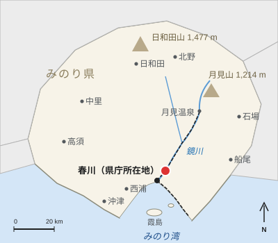
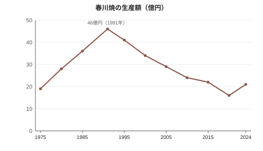

春川焼
| 春川焼 Harukawa ware | |
|---|---|
 霞釉に鉄褐色の口縁をもつ茶碗 | |
 主産地の陶山地区 | |
| 概要 | |
| 種別 | 陶器（炻器） |
| 産地 | みのり県春川市陶山地区 |
| 起源 | 1624年（藩窯） |
| 創始者 | 大谷宗右衛門 |
| 陶土 | 陶山土（酸化鉄4〜6 %） |
| 主な釉薬 | 霞釉 |
| 装飾 | 川筋文、柚子肌 |
| 焼成 | 還元焔焼成、1,250〜1,280 °C |
| 指定 | 伝統的工芸品（1979年） |
| 産業規模（2024年） | |
| 窯元数 | 38（1991年は71） |
| 従事者数 | 約210人 |
| 生産額 | 21億円 （最盛期は1991年の46億円） |
| 産地組合 | 陶山窯業協同組合 |

春川焼（はるかわやき）は、みのり県春川市で生産される陶器（炻器）である。主産地は春川中央駅から鉄道で北東へ約13.5 km、釜野駅が最寄りの陶山（すやま）地区で、陶山焼とも呼ばれる。乳白色を帯びた淡い青灰色の「霞釉」（かすみゆう）と、その表面に現れる柚子の皮のような細かな凹凸「柚子肌」、鉄分の多い陶山土が釉の薄い口縁に透けて生じる鉄褐色の縁、酸化鉄で波線を描く「川筋文」（かわすじもん）を特色とする。1624年（寛永元年）、春川藩初代藩主朝霧忠正が肥前の陶工大谷宗右衛門を招き、春川城内に藩窯を開いたのを起源とする[1]。
1680年代からは陶山村の民窯が日用品を焼き、1871年に藩の庇護を失った後も欧米向けの輸出陶器で命脈を保った。長い衰退の後、1919年に陶芸家河辺秋山が再興に着手し、戦後はその弟子石塚花枝が1964年に途絶えていた藩窯の霞釉を復元して、1985年に重要無形文化財保持者（人間国宝）に認定された。1979年には国の伝統的工芸品に指定されている。2024年の窯元数は38、従事者は約210人、生産額は21億円で、窯元71・生産額46億円を数えた1991年の最盛期の半分に満たない[2]。1952年から毎年5月の第1週末に釜野駅前で開かれる釜野陶器市には約15万人が訪れる。
歴史[編集]
起源と藩窯[編集]
1600年の関ヶ原の戦いの後、朝霧忠正は実野国186,000石を与えられ、1603年に鷺舞山で春川城の築城に着手した。江戸時代初期の多くの大名と同様、忠正も城で用いる茶道具や、幕府・諸大名への献上品を焼く御用窯を求めた。1624年、忠正は1590年代以降に登窯と朝鮮系の技術が広まっていた肥前（九州北部）から、陶工の大谷宗右衛門（1588年 - 1659年）を招いた[1]。なお、この1624年という創始年には異説がある[注 1]。
宗右衛門は城の二の丸の斜面に3室の登窯を築いた。この窯は城の別名にちなんで鷺舞窯（さぎまいがま）と呼ばれる。藩窯の製品は売買されず、城中で用いられたほか、家臣や光雲寺などの寺社に下賜され、あるいは江戸への献上品とされた。製品には朝霧家の家紋である違い鷺羽の小印が押された。大谷家は8代にわたり30石の扶持を受けて御用窯を世襲し[要出典]、釉の調合は口伝で父から子へと伝えられ、外部には秘された。霞釉は17世紀半ばに藩窯で生まれたとされ、現存最古の紀年作である寛文7年（1667年）の箱書をもつ茶碗は春川城天守の展示室に収蔵されている[3]。
陶山の民窯[編集]
城から鏡川を約12 km遡った陶山村には、1680年代に民窯が現れた。4代藩主朝霧忠信（在位1680年 - 1712年）は、天和の飢饉（1681年 - 1682年）からの復興策の一環としてこれを許可した。1688年にユズの植栽を命じたのも同じ政策による。民窯は地元の鉄分の多い土を用いたが、霞釉と鷺羽印は藩窯専用とされ、使用を禁じられた。そのため民窯は透明な灰釉や飴釉を用い、製品には方形の枠に「春」の字を入れた印を押した。甕、徳利、擂鉢、皿など町人や農民向けの日用品が中心で、平底の川船で鏡川を下って春川の商人に渡り、みのり湾から海路で大坂にも運ばれた[3]。

民窯で最大のものは、1690年頃に村の上の斜面に築かれた14室の共同登窯陶山古窯（すやまこよう）である。全長約58 mで、複数の窯元が焼成ごとに窯室を借りて用いた。1838年（天保9年）の藩の調査では、陶山の窯業戸数は27戸、職人は約400人を数えた[1]。陶山古窯は1931年まで使用され、2015年10月4日に国の史跡に指定された[4]。
衰退と輸出陶器[編集]
1871年の廃藩置県により藩窯は終わりを迎えた。同年、大谷家8代目が鷺舞窯を閉じ、釉の調合が文書に残されていなかったため、霞釉の製法は失われた。民窯も保護された地元市場を失い、汽船で運ばれる有田や瀬戸の安価な磁器に押されて、陶山の窯業戸数は1868年から1880年までにほぼ半減した[5]。
1880年代に入ると、春川の商人は輸出に活路を求めた。1886年に呉服町の商人らが設立した陶山輸出陶器会社は、ティーセット、花瓶、植木鉢、傘立てなどの洋風の器を川筋文で飾り、ラテン文字で「HARUKAWA」と刻印して、神戸港から英国、米国、オーストラリアへ送り出した。輸出は1907年頃に最盛期を迎えた[6]。第一次世界大戦後に海外の需要は急減し、輸出会社は1923年に解散した。1926年7月15日には春川鉄道の前身である鏡谷鉄道が最初の区間として春川 - 釜野間を開業し、陶山の最寄り駅となった釜野駅から旅客のほか陶土や陶器も運んだ[7]。
河辺秋山による再興[編集]
工芸としての春川焼の再興は、陶山の陶工の家に生まれ、京都で釉薬の化学を学んで帰郷した河辺秋山（1881年 - 1958年）の功績とされる。秋山は1919年に陶山で秋山窯を開いた。子爵となっていた朝霧家から藩窯の作品を借りて研究し、江戸時代の器形と川筋文に立ち返って、主に茶人や大阪・東京の百貨店に作品を納めた。ただし霞釉の再現には至らず、「秋山青」と呼ばれた淡青色の灰釉はその近似にとどまった[3]。
秋山は弟子をとり、1938年には17歳の石塚花枝を初めての女性の弟子として迎えた。1942年4月1日、陶山村は春川市に編入された。1944年から1945年にかけて陶山の窯は戦時の燃料統制により火を落としたが、市街地の38 %を焼いた1945年7月29日の空襲の被害は免れた。戦後、陶山窯業協同組合が1952年に第1回の釜野陶器市を開き、同じ年に石塚は自らの霞窯を開いた。1958年に秋山が没すると、息子の河辺陶哉（1912年 - 1990年）が秋山窯を継いだ。
石塚花枝と霞釉の復元[編集]
1958年、二の丸の鷺舞窯跡が発掘され、窯床と約6,800点の陶片が出土した[8]。石塚花枝は6年をかけてこれらの陶片を研究し、陶山周辺の灰や鉱物と釉を比較した。そのノートには214回の試験焼成が記録されている。1964年、石塚は稲藁灰、木灰、鏡川産の長石から藩窯の霞釉を復元した。茶碗「朝靄」（1966年）と、日本伝統工芸展で受賞した大壺「川筋」（1967年）によって、霞釉は広く知られるようになった[9]。
大谷家とは異なり、石塚は釉の調合を公開した。1970年に基本調合を陶山窯業協同組合に提供し、1970年代末までには陶山のほとんどの窯元がその変法を用いるようになった。こうして霞釉は春川焼全体の特色となった。石塚は1985年に人間国宝に認定された。
伝統的工芸品の指定[編集]
再興の実績を受け、春川焼は1979年に伝統的工芸品産業の振興に関する法律（1974年）に基づく国の伝統的工芸品に指定された。指定の要件は、陶山土を用いること、ろくろ成形または手びねりによること、天然の灰を主とする釉を用いること、加飾を手描きで行うことなどで、検査に合格した製品には伝統証紙が貼られる[2]。1981年には春川大学に陶山の窯元と連携する陶磁研究センターが設置され、1987年には春川市が英国の陶業の町ケルブリッジと姉妹都市提携を結んだ。
1991年以降の産業[編集]


生産額は1975年の19億円から1985年の36億円へと伸び、窯元71を数えた1991年に46億円で最盛期を迎えた。バブル経済の崩壊後は、贈答品や引出物、高級食器の需要が減り、安価な輸入食器が市場を奪った。生産額は2000年に34億円、2010年に24億円と減少し、新型コロナウイルス感染症の流行で陶山の店から客足が途絶えた2020年には16億円まで落ち込んだ。その後、春川の観光客数が過去最多を更新したことや、オンラインマーケット「マーケッタ」での販売に支えられ、2024年には21億円に回復した[2]。2024年の窯元数は38、従事者は約210人で、窯元の当主の半数以上が60歳を超えている[要出典]。
陶山窯業協同組合は1996年から新規就業者向けの2年間の研修課程を設けており、2015年以降は若手陶芸家による開窯も相次いでいる。産業の詳細は春川市の経済を参照。
材料と技法[編集]
陶土[編集]
陶山土は陶山周辺の丘陵にある風化花崗岩と堆積粘土の層から採掘される。酸化鉄を4〜6 %含む鉄分の多い土で、還元焔焼成では暗い灰褐色に焼き上がる。かつては1〜3年間屋外で風化させてから水簸・篩・土練りを行ったが、現在ではほとんどの窯元が組合員の経営する2か所の製土所から調整済みの土を購入している[10]。
霞釉[編集]
霞釉（かすみゆう）は、稲藁灰、木灰、鏡川の長石質の砂から作られる[注 2]。1970年に公開された石塚の基本調合は、重量比でおおむね藁灰4、木灰3、長石3である。藁灰に含まれる珪酸が乳濁した柔らかな質感を生み、素地の鉄分が還元焔のもとで淡い青灰色を与える。口縁など釉が薄く流れる部分では素地の鉄が透けて褐色の帯となり、春川焼を代表する特徴である鉄褐色の口縁となる[9]。
柚子肌[編集]
柚子肌（ゆずはだ）は、釉面に現れる細かなくぼみで、みのり県で広く栽培される柚子の皮に似ることからこの名がある（みのり県のユズ栽培を参照）。焼成中に釉の中の小さな気泡がはじけて塞がりきらずに残ったもので、陶工は釉の厚さと冷却の速さによってこれを調整する。藩窯の作品では控えめなものが多いが、現代の陶工はこれを見どころとすることが多い。
川筋文[編集]
川筋文（かわすじもん）は、酸化鉄で太い刷毛を素早く走らせ、ゆるやかに波打つ平行線を描く下絵付けの文様である。鏡川の流れを表すといわれる。18世紀に民窯で生まれ、輸出陶器に多用されたのち、河辺秋山と石塚花枝に受け継がれた。石塚の1967年の受賞作の大壺はこの文様にちなんで「川筋」と名付けられている。
成形と焼成[編集]
ほとんどの作品はろくろで成形され、大甕は紐作りで積み上げてから手回しろくろで仕上げる。約800 °Cで素焼きした後に施釉し、1,250〜1,280 °Cの還元焔で本焼きする。かつての焼成はすべて薪の登窯で行われ、陶山古窯の焼成には約3日を要した。現在はほとんどの窯元がガス窯を用いるが、薪窯で焼く窯元も6軒ほど残り、陶山共同窯には5室の薪の登窯があって、陶器市前の4月と11月の年2回焚かれている[3]。
器種[編集]

春川焼の伝統的な主な器種は次のとおりである。
- 茶碗 - 17世紀から藩窯で焼かれた最も格の高い器種。鉄褐色の口縁をもつ霞釉の茶碗は春川焼の代表作とされる。
- 徳利 - 18世紀以来の陶山の器形である、首の長い「鷺首徳利」（さぎくびどっくり）が知られる。
- 壺・甕 - 民窯が水、味噌、漬物、柚子酢の貯蔵用に焼いたもので、高さ90 cmほどに及ぶものもあり、川筋文を描くことが多い。
- 皿 - 小皿から大皿まで幅広い。春川焼の皿は地元の飲食店で広く使われ、春川の郷土料理の灯籠饅頭を盛る器にもなっている。
- 香炉 - 石灯籠をかたどったものが多く、寺院や家庭の仏壇のために作られる。
1960年代以降はコーヒーカップ、鉢、花瓶など現代的な食器・花器も作られ、現在の生産額の大半を占めている。

主な窯元[編集]
2024年に稼働していた窯元は約38で、その多くは陶山の家族経営の小規模な工房である。主なものを以下に示す[11]。
| 名称 | 読み | 創業 | 種別 | 現状 |
|---|---|---|---|---|
| 鷺舞窯 | さぎまいがま | 1624年 | 藩窯。春川城二の丸の3室の登窯 | 1871年廃窯。1958年に窯跡を発掘 |
| 陶山古窯 | すやまこよう | 1690年頃 | 14室の共同登窯 | 1931年に最後の焼成。2015年に国史跡 |
| 谷口窯 | たにぐちがま | 1736年 | 民窯（家業） | 現役。現存最古の窯元（11代目） |
| 陶山輸出陶器会社 | すやまゆしゅつとうきがいしゃ | 1886年 | 石炭窯をもつ輸出向け工場 | 1923年解散 |
| 秋山窯 | しゅうざんがま | 1919年 | 河辺秋山の工房窯 | 現役（河辺家3代目） |
| 霞窯 | かすみがま | 1952年 | 石塚花枝の工房窯 | 現役。2009年から水原蓮が当主 |
| 陶山共同窯 | すやまきょうどうがま | 1974年 | 陶山窯業協同組合が運営する共同のガス窯と薪の登窯 | 現役 |
| 燕窯 | つばめがま | 2018年 | 高野美緒の工房窯 | 現役 |
窯印[編集]
窯印は春川焼の年代を判定する主な手がかりである。藩窯の作品は希少で高価なため、1880年代から1930年代にかけて民窯で鷺羽印の模倣品が作られた[3]。
| 時代 | 印 | 形式 | 見分け方 |
|---|---|---|---|
| 藩窯（1624年 - 1871年） | 違い鷺羽 | 高台内に押した径約1 cmの小印 | きめ細かい明るい灰色の素地、霞釉。「春」印はない |
| 陶山の民窯（1680年代 - 1910年代） | 方形枠に「春」 | 底部または腰に押した径約1.5 cmの印 | 粗い赤褐色の素地、透明灰釉または飴釉。1871年以前の霞釉はない |
| 輸出陶器（1880年代 - 1910年代） | 「HARUKAWA」 | ラテン文字の大文字の刻印。1890年代以降は「JAPAN」を添えるものが多い[注 3] | ティーポットや花瓶など洋風の器形、川筋文 |
| 鷺羽印の模倣品（1880年代 - 1930年代） | 鷺羽印の写し | 径約1.5 cmと大きく、羽の交差の角度が急 | 鉄分の多い赤褐色の素地。「春」印を併せて押すことが多い |
| 再興期・現代（1919年 - ） | 作家印と窯印 | 2つの小印。例として秋山窯は「秋」、霞窯は「霞」 | 作者が特定でき、多くは共箱に入る |
| 伝統的工芸品（1979年 - ） | 伝統証紙 | 作品または箱に貼る紙の証紙 | 登録された窯元で認定された技法により作られた製品のみ |
主な陶芸家[編集]
| 陶芸家 | 生没年 | 師 | 業績 |
|---|---|---|---|
| 大谷宗右衛門 | 1588年 - 1659年 | 肥前の陶工 | 藩窯・鷺舞窯を開窯（1624年） |
| 河辺秋山 | 1881年 - 1958年 | 京都で釉薬を学ぶ | 1919年から春川焼を再興。秋山窯 |
| 河辺陶哉 | 1912年 - 1990年 | 河辺秋山（父） | 1958年から秋山窯当主。川筋文の大皿 |
| 石塚花枝 | 1921年 - 2009年 | 河辺秋山（1938年入門） | 霞釉を復元（1964年）。人間国宝（1985年） |
| 水原蓮 | 1956年 - | 石塚花枝（1975年 - 1984年） | 2009年から霞窯当主 |
| 高野美緒 | 1988年 - | 水原蓮（2010年 - 2017年） | 柚子肌の釉による食器。燕窯（2018年） |
釜野陶器市[編集]
釜野陶器市（かまのとうきいち）は、毎年5月の第1週末（土曜日・日曜日）に、釜野駅前と陶山の窯元地区で開かれる。1952年から陶山窯業協同組合が主催し、約15万人が訪れる。釜野駅から陶山古窯までの約1.2 kmの通りに、窯元や陶器商、春川大学の学生など約120の店が並び、多くの窯元が工房を公開する。B品の割引販売のほか、ろくろの実演や子ども向けの土遊びコーナーも設けられる[12]。
陶山へは春川中央駅から13.5 kmの鏡線釜野駅が最寄りで、同駅には特急「月影」も停車し、普通列車の多くが折り返す。春川鉄道はこの一帯を「釜野 焼物の里」として案内している。春川中央駅からは市営バス21系統も1時間ごとに運行されている。ケルブリッジとの交流で来日している陶芸家も例年作品を出品する。
主な所蔵先[編集]
- みのり県立美術館（春川城三の丸） - 春川焼1,240点を所蔵する最大の公的コレクション。2010年に寄贈された石塚花枝の作品312点と釉の研究ノートを含む[9]。
- 春川城天守の展示室 - 朝霧家伝来の藩窯の作品を展示し、1667年の茶碗もここにある。
- 春川大学陶磁研究センター - 市から寄託された1958年の鷺舞窯跡発掘の陶片と、近現代作品の研究用コレクションを保管する。
- 春川焼会館 - 釜野駅近くにある陶山窯業協同組合の施設で、常設展示と売店があり、陶芸体験もできる。
- ケルブリッジ陶磁博物館（英国） - 「HARUKAWA」銘の輸出陶器約140点を所蔵する。
国際交流[編集]
春川市は1987年5月14日から、英国スタッフォードシャーの陶業の町ケルブリッジと姉妹都市提携を結んでいる。提携は輸出陶器の縁から生まれたもので、1980年代初めに英国の輸出陶器の収集家が陶山を訪れたことがきっかけとされる[要出典]。1988年からは毎年2人の若手陶芸家の交流事業が行われ、約3か月間、相手の町の工房で制作する。高野美緒も2015年に参加した。1987年の調印式では石塚花枝が霞釉の大壺をケルブリッジに贈り、2017年には提携30周年を記念する合同展が開かれた[13]。
関連項目[編集]
脚注[編集]
注釈[編集]
出典[編集]
- ^ a b c 春川市史編さん委員会 編（1989）『春川市史 第2巻 近世編I』春川市、412–418頁。
- ^ a b c みのり県商工労働部（2025）『みのり県伝統的工芸品産業実態調査報告書（2024年版）』みのり県、14–19頁。
- ^ a b c d e 森岡健二（1997）『春川焼 陶山四百年の歩み』みのり出版、23–41頁。
- ^ 「陶山古窯、国史跡に」『春川日報』2015年10月5日、1面。
- ^ 春川市史編さん委員会 編（1989）『春川市史 第4巻 近代編』春川市、233–240頁。
- ^ 岡田亮（2003）「みのり県の輸出陶磁器 1880–1920年」『日本陶磁史研究』第18号、45–71頁。
- ^ 春川鉄道株式会社（2023）『ハルテツ百年史』春川鉄道、31頁。
- ^ 春川市教育委員会（1960）『春川城鷺舞窯跡発掘調査報告書』春川市教育委員会、5–12頁。
- ^ a b c みのり県立美術館 編（2011）『石塚花枝 寄贈作品展』展覧会図録、8–15頁。
- ^ 春川大学陶磁研究センター（2006）「陶山の原料 25年間の調査」『陶磁研究センター紀要』第25号、1–34頁。
- ^ 陶山窯業協同組合（2016）『陶山の窯元』陶山窯業協同組合、6–58頁。
- ^ 「陶山に人波 釜野陶器市」『春川日報』2025年5月6日、22面。
- ^ Whitcombe, Margaret (2008). Harukawa in the Potteries: A Sister-City Story. Kellbridge Civic Society, pp. 12–29.
参考文献[編集]
- 石塚花枝（1975）『霞 失われた釉の覚書』みのり出版。
- 陶山窯業協同組合（2024）『春川焼四百年』陶山窯業協同組合。